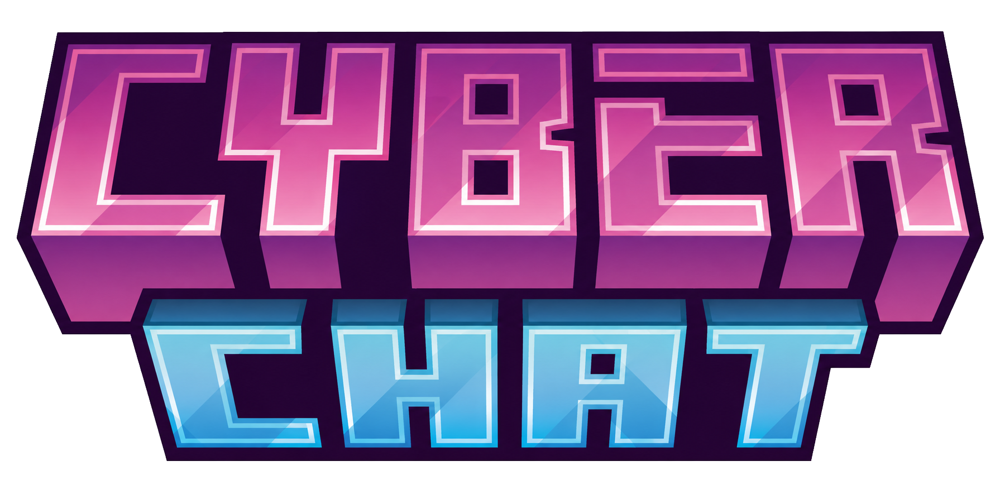

APIPublic API for building plugins that interact with CyberChat — a cross-server chat plugin for Paper 1.21.4+ and Velocity.
This host is a Maven repository. Point your build tool at
https://billyrosty.github.io/CyberChat-API — there is nothing to download
by hand.
Pre-1.0. Signatures may be added to, renamed or removed between versions without a deprecation period until CyberChat reaches a stable release. Pin an exact version rather than a range.
repositories {
maven("https://billyrosty.github.io/CyberChat-API")
}
dependencies {
compileOnly("fr.billyrosty:cyberchat-api:0.1.0-beta.1")
}repositories {
maven { url 'https://billyrosty.github.io/CyberChat-API' }
}
dependencies {
compileOnly 'fr.billyrosty:cyberchat-api:0.1.0-beta.1'
}<repositories>
<repository>
<id>cyberchat</id>
<url>https://billyrosty.github.io/CyberChat-API</url>
</repository>
</repositories>
<dependencies>
<dependency>
<groupId>fr.billyrosty</groupId>
<artifactId>cyberchat-api</artifactId>
<version>0.1.0-beta.1</version>
<scope>provided</scope>
</dependency>
</dependencies>name: MyPlugin
version: 1.0.0
main: com.example.myplugin.MyPlugin
depend: [CyberChat]Use softdepend instead if your plugin should still load without CyberChat, and
guard every call with CyberChatAPIProvider.isAvailable().
import fr.billyrosty.cyberchat.api.CyberChatAPI;
import fr.billyrosty.cyberchat.api.model.ChannelDefinition;
public class MyPlugin extends JavaPlugin {
@Override
public void onEnable() {
CyberChatAPI api = CyberChatAPI.getInstance();
// A channel that lives only in memory, but behaves exactly like one
// in channels.yml. It does not survive a restart -- register again.
api.getChannelService().register(ChannelDefinition.builder("trade")
.alias("tr")
.speakPermission("myplugin.trade")
.cooldownSeconds(5)
.crossServer(true)
.build());
}
}| Service | Access | Description |
|---|---|---|
ChannelService | api.getChannelService() | List and look up channels, register your own, move players, broadcast |
PlayerService | api.getPlayerService() | A player's channel, mutes, toggles, ignores and nickname |
Every event extends CyberChatEvent, so a listener can catch the family at once.
| Event | When | Cancellable | Thread |
|---|---|---|---|
CyberChatMessageEvent | A chat line, after every CyberChat check passed | yes | async |
CyberChatChannelSwitchEvent | A player changes their active channel | yes | main |
CyberChatPrivateMessageEvent | A private message is about to go out | yes | async |
CyberChatMuteEvent | A mute was issued or lifted | no | main |
The two asynchronous events fire off the main thread, like Paper's own
AsyncChatEvent. A listener must not touch other Bukkit API from them — hop back to
the main thread first.
@EventHandler
public void onChat(CyberChatMessageEvent event) {
// The formatted line, {cc:...} tokens still unresolved -- they expand
// per recipient, on whichever server that recipient is connected to.
if (event.getChannelId().equals("trade")) {
event.setMessage("<gray>[Trade]</gray> " + event.getMessage());
}
}The reason CyberChat exists: a message travels the network as a template and is resolved once
per recipient, so {cc:rel:<papi placeholder>} in a formats.yml
template renders differently for every reader. That happens below this API — a listener sees the
template, not the rendered line any one viewer gets. Rewriting the message keeps the tokens
intact.
Full documentation with examples: billyrosty.github.io/CyberFactions-Docs